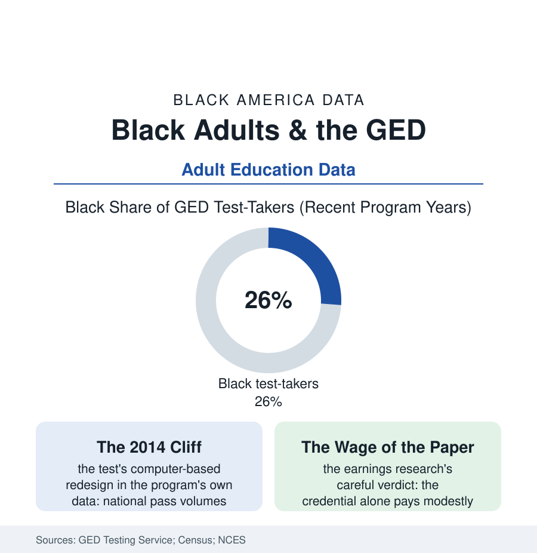

Black Education
The Second Diploma: The GED and the Adults Who Go Back
Some two million Black adults without a diploma are the GED's true constituency — and the test's history is the story of a second chance repeatedly repriced. The GED file.

The diploma has a understudy, and it works the hardest shifts in American education: the GED, taken overwhelmingly by adults the first system finished with — the dropout of the K-12 file returning at twenty-six, at forty, at sixty, to a testing center. Black adults are about a quarter of its candidates in the program's data, against a need the attainment tables measure in the millions. This article reads the second-diploma file.
The Population and the Door
The constituency's arithmetic is the pushout file's adult echo: the Census counts the Black adults twenty-five and older without a high-school credential in the millions (their share of the population roughly double the white share in the attainment tables), concentrated in the cohorts the segregated and underfunded school eras processed and in the younger file of the discipline system's exits. For this population the GED is not an enrichment but infrastructure: the credential is the stated prerequisite for the military's enlistment tiers, the community college's financial aid, the union apprenticeship's application, the employer's checkbox in the application data — a single test standing between the adult and the entire formal economy's front door, which is why its administration is an equity file of the first rank. The adult-education system that prepares candidates is the education section's most starved line item in the funding data (the federal adult-ed appropriation spread across millions of eligible adults at a few hundred dollars each in the program analyses, the waiting lists for classes in the thousands in the big states' reports, the classes themselves meeting at night in the same school buildings the day system mis-served — the returning student's commute down the transportation file's old route, to sit in a teenager's desk and be taught, this time, by a system asking for a second chance of its own).
The credential was born, fittingly, as a veteran's repair: the tests were built in 1942 so that servicemen whose schooling the war interrupted could certify their learning and proceed to college on the GI Bill — an origin that set the pattern of its whole history, the state repeatedly using a single examination to settle its debts to the people its institutions left behind. The modern alternatives file records the system's slow diversification around the exam: the external-diploma programs assessing portfolios of adult competence rather than seat time, the adult high schools and co-enrollment models letting the returning student earn the actual diploma in evening buildings, the integrated programs welding the test preparation to a trade credential so the adult's scarce hours buy two doors at once — the policy literature's direction of travel, at the funding file's usual distance behind its own evidence.
The Test That Repriced Itself
The GED's modern history is a case study in how a credential's design decisions land on its poorest users: the 2014 redesign — computer-only delivery, a substantially harder and pricier instrument aligned to the college-readiness standards — produced the program's own documented cliff (completions falling by more than half nationally in a single year, the Black candidate counts falling with the whole, the recovery consuming most of a decade), and the market's response (a competitor credential, the HiSET, adopted by state after state on price and paper-delivery grounds — the two-test map of the current data a fossil of that shock). The pass-rate data carry the file's forward rows: the rates by race in the program reports (Black candidates passing at lower rates, the preparation gap of the waiting-list file converted to a test statistic), the subject data's weak floor (mathematics, everywhere in this section), and the earnings literature's verdict, which the file owes its readers unvarnished — the credential's own wage premium is modest in the careful studies (the GED holder earning nearer the dropout than the graduate in the longitudinal tables, its signal partly discounted by the employers' models), its decisive value being sequential: the doors it opens to the certificate programs, the licenses, and the degrees whose premiums the other files measure — a key, not a destination. The adult learners' own data close the file where it began: the survey portraits of the returning student (the mother testing when her child starts school, the worker one checkbox from the promotion, the grandfather in the program's graduation photographs) record a motivation the system of their youth never priced — persistence, this time, as the curriculum.
Reading the GED Data
The second diploma is the education system's confession and its repair shop in one document: millions of adults it failed the first time, queueing at night to buy back the credential at retail. The testing service publishes the pass rates. The graduation ceremonies of the adult-ed programs — the families in the folding chairs, the children holding the flowers — publish the addendum.
More in Black Education
Black Educational Attainment: High School Parity, the College Gap
About 89 percent of Black adults hold a high school diploma and one in four holds a bachelor's degree or higher — the attainment ladder, the college completion gap, and the generational trend.
Historically Black Colleges and Universities: Enrollment and Degrees
More than 100 HBCUs enroll roughly 290,000 students and award about one in six Black bachelor's degrees — an outsized share from a small sector. The federal education data.
Black College Enrollment: 2.4 Million Students
About 2.4 million Black students are enrolled in American colleges — nearly two-thirds of them women. The NCES enrollment data by sector, level, and trend.
Source: GED Testing Service annual data; U.S. Census Bureau educational attainment; National Center for Education Statistics adult education data; U.S. Department of Education OCTAE.